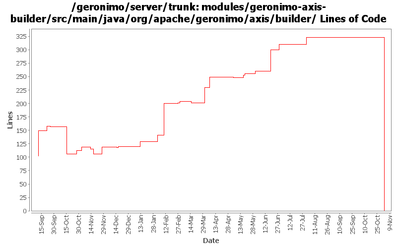

[root]/modules/geronimo-axis-builder/src/main/java/org/apache/geronimo/axis/builder

| Author | Changes | Lines of Code | Lines per Change |
|---|---|---|---|
| Totals | 82 (100.0%) | 539 (100.0%) | 6.5 |
| gawor | 10 (12.2%) | 189 (35.1%) | 18.9 |
| djencks | 16 (19.5%) | 147 (27.3%) | 9.1 |
| dims | 1 (1.2%) | 62 (11.5%) | 62.0 |
| dblevins | 1 (1.2%) | 59 (10.9%) | 59.0 |
| jlaskowski | 11 (13.4%) | 42 (7.8%) | 3.8 |
| jgenender | 2 (2.4%) | 12 (2.2%) | 6.0 |
| dwoods | 2 (2.4%) | 9 (1.7%) | 4.5 |
| akulshreshtha | 1 (1.2%) | 9 (1.7%) | 9.0 |
| dain | 11 (13.4%) | 7 (1.3%) | 0.6 |
| rickmcguire | 2 (2.4%) | 3 (0.6%) | 1.5 |
| prasad | 14 (17.1%) | 0 (0.0%) | 0.0 |
| kevan | 9 (11.0%) | 0 (0.0%) | 0.0 |
| hogstrom | 2 (2.4%) | 0 (0.0%) | 0.0 |
GERONIMO-3565. Modules distributed amongst framework/modules and plugins
0 lines of code changed in 14 files:
check for jax-ws services in j2ee webservices.xml descriptor
17 lines of code changed in 1 file:
add some logging to indicate the endpoint uri of the service
10 lines of code changed in 1 file:
handle jaxrpc web services in javaee webservices.xml file
44 lines of code changed in 2 files:
GERONIMO-3246 Cleanup exception handling so stack traces for first failures are not discarded.
3 lines of code changed in 2 files:
prepend / to the endpoint uri if missing
5 lines of code changed in 1 file:
GERONIMO-348 Change throw() to log.warn() due to EJB and other deployment failures.
4 lines of code changed in 1 file:
expose Module instead of the just the module jar file
2 lines of code changed in 2 files:
GERONIMO-348 Invalid module path or references in plan should result in failed deployment.
5 lines of code changed in 1 file:
GERONIMO-3134 GERONIMO-3136 Fix app client refs including ejb refs. Get a lot closer to jpa working on the app client
1 lines of code changed in 1 file:
use .value() on an enumeration type
1 lines of code changed in 1 file:
enabling jaxrpc ejb support
25 lines of code changed in 1 file:
handle web-service-binding element for ejbs
85 lines of code changed in 1 file:
GERONIMO-2958 MyFaces annotation support. Also clean up Module construction and remove unused method from ModuleBuilderExtension
0 lines of code changed in 1 file:
GERONIMO-2908 - Deploy JAX-WS services without webservices.xml
4 lines of code changed in 1 file:
GERONIMO-2887 Start hooking up injection for jetty
10 lines of code changed in 1 file:
GERONIMO-2883: change conversion to JEE from J2EE
8 lines of code changed in 1 file:
Ported Axis1 integration
59 lines of code changed in 1 file:
Fix for GERONIMO-2791 - Switching ServiceRef naming builder
62 lines of code changed in 1 file:
GERONIMO-2723 Upgrade naming-builder and hence j2ee-builder to use javaee 5 schemas
9 lines of code changed in 1 file:
GERONIMO-2668 help the axis deployer adjust to presence of other webservice deployers
2 lines of code changed in 1 file:
GERONIMO-2657 intermediate checkin, new method in AbstractNamingBuilder and deal with spec refs in PersistenceUnitRefBuilder
2 lines of code changed in 1 file:
GERONIMO-2597 make web service builder optional and allow multiple builders
25 lines of code changed in 1 file:
GERONIMO-2537 Update the src headers in server/trunk/modules to be compliant with the new ASF src header and copyright policy (http://www.apache.org/legal/src-headers.html). I also did some cleanup of the src headers and tried to make them all a consistent format
0 lines of code changed in 9 files:
GERONIMO-2427 fix some problems with namingBuilders: in particular EnvironmentEntryBuilder wasn't converting elements correctly
2 lines of code changed in 1 file:
Partial fix for GERONIMO-2537 All Geronimo source files must be brought in line with the new ASF source header and copyright notice policy
The modules directory is supposed to be migrated. There're some issues with some files, but they'll be handled manually
42 lines of code changed in 11 files:
GERONIMO-2540 Naming builders do not see classes located in a war in an ear
1 lines of code changed in 1 file:
GERONIMO-2528 Move generic webservice specifc code to a new geronimo-webservice-build module
6 lines of code changed in 10 files:
GERONIMO-2499, OPENEJB-280. Generalize NamingBuilder slightly, use new corba runtime and deploy time configs. I don't think all the builders are fully wired up yet
1 lines of code changed in 1 file:
GERONIMO-2492 first steps, make the WebServiceBuilder a little more flexible
36 lines of code changed in 3 files:
GERONIMO-2427 make the axis service-ref builder and the env-entry ref builder work for both j2ee 1.4 and jee5 xml
8 lines of code changed in 1 file:
GERONIMO-2291 port web service builder changes from 1.1 branch: ws builder gets to determine if there is something to deploy
13 lines of code changed in 1 file:
GERONIMO-1557 Show WebService Name rather than throw a SOAPFault to more closely mimic Tomcat behaviour
0 lines of code changed in 2 files:
GERONIMO-2383 Refactor naming builder to a set of registered builders
47 lines of code changed in 3 files: